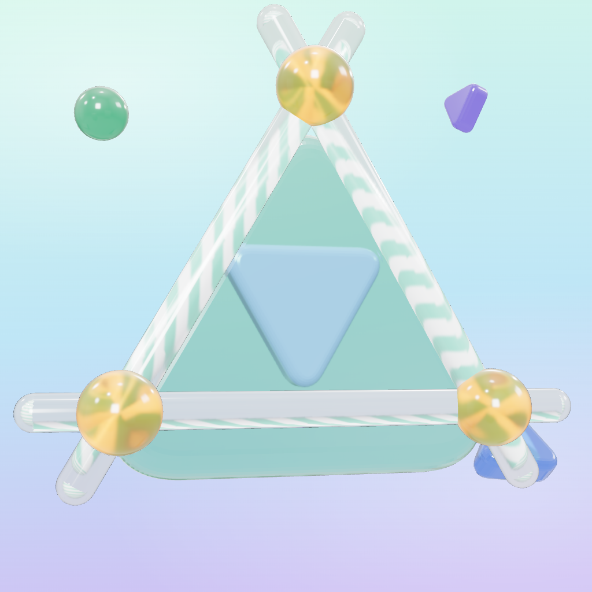

Credits · Danksagung · Teşekkürler
Deltaic is made by Eda Cansu Başoğlu.
Made in the game
All jelly shapes, the logo and the app icon are modelled and rendered in the game itself. All music and sound effects are synthesised live while you play; Deltaic contains no recorded audio.
Open-source software and fonts
Thank you to the people behind these projects:
- three.js (3D rendering) · threejs.org · MIT License
- Capacitor (iOS app shell, haptics, status bar, splash screen) by Ionic · capacitorjs.com · MIT License
- Phosphor Icons (buttons) · phosphoricons.com · MIT License
- Fredoka font by Milena Brandão and Hafontia · fonts.google.com/specimen/Fredoka, bundled via Fontsource · SIL Open Font License 1.1